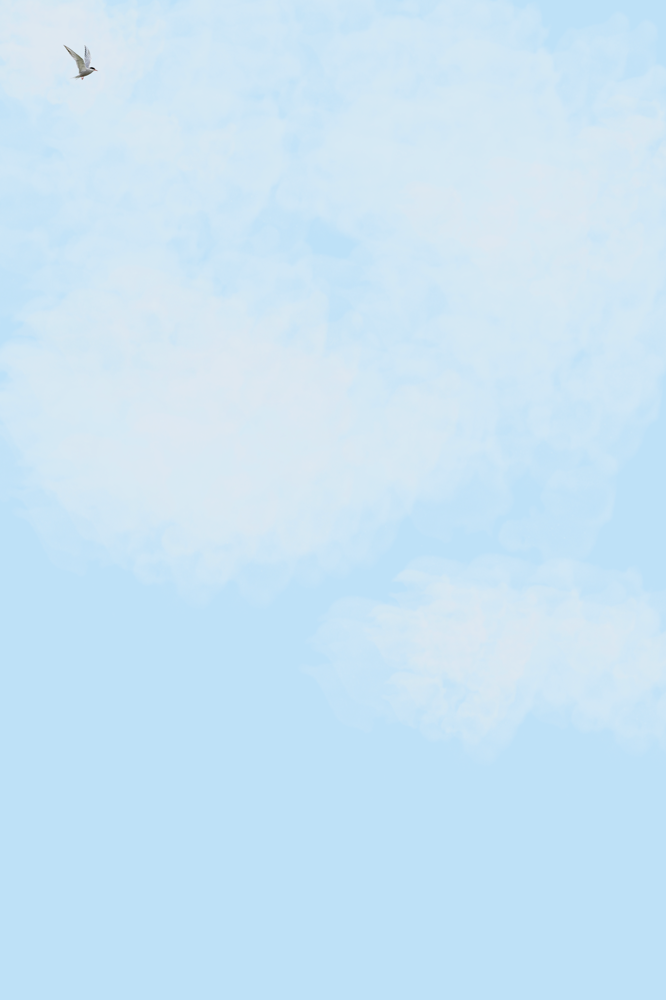

Pole to Pole

Welcome to the Arctic tern's world!
On the exterior, the tern is a relatively simple and typical bird.

They have quite a few "normal" characteristics - they mate for life and eat small fish and crustaceans. Add fish to image.
The Arctic tern is far from normal.

This long journey ensures that they see two summers every year and more daylight than any other creature on the planet.
Following the Summer Sun
To understand the brevity of this migration, we'll follow a single tracked bird.
Their migration starts here in Alaska.
Filler text.
Filler text.